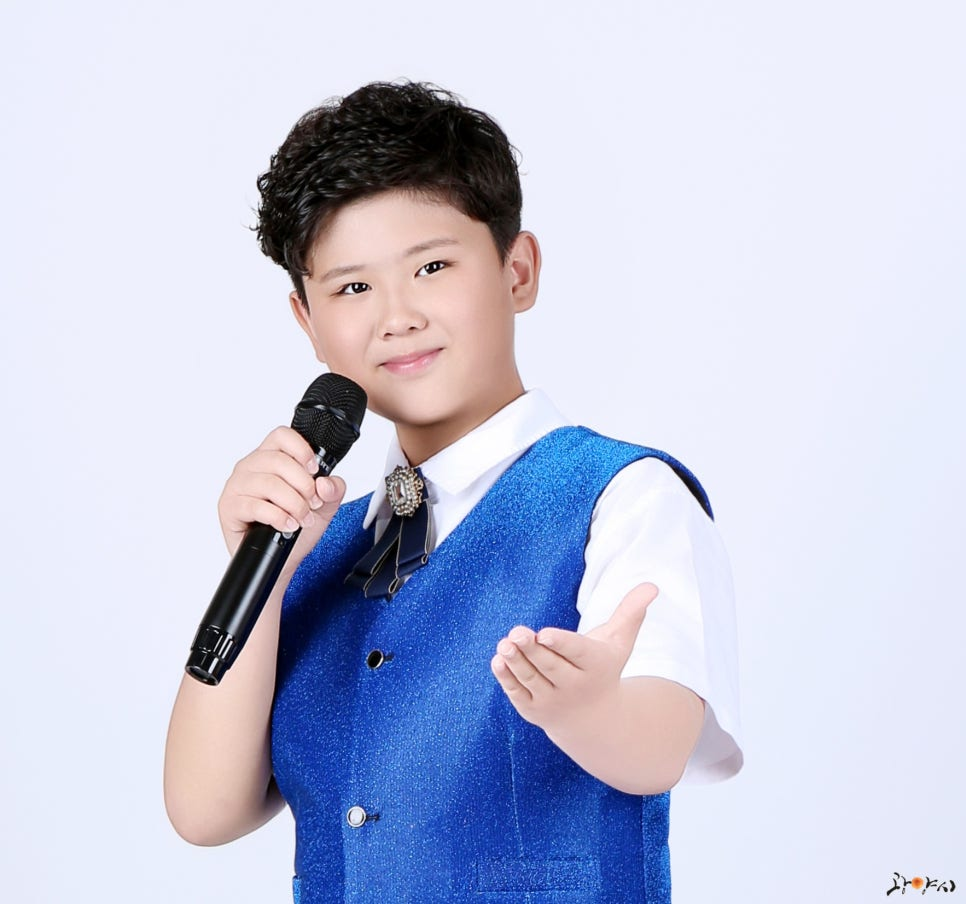

💙 광양이 키운 12세 트롯 꿈나무 💙

최도현을 응원해주세요!
⭐ 이렇게 참여해주세요!
📺
9월 9일(화)
KBS1TV 아침마당 생방송 중
전화 투표가 진행됩니다.
⭐ 최도현 투표 번호 ⭐
○번
📞 투표 전화 바로 연결하기
버튼을 누르면
15801 전화 화면
으로 연결됩니다.
📞 전화가 연결되면
위에 표시된
최도현 투표 번호
를 눌러주세요.
📺
9월 9일 아침마당 생방송 중
최도현 응원 투표 부탁드립니다! 💙